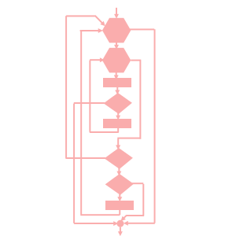

|
Logic Constructs Apply structured programming principles, including single-entry/single-exit logic, when writing C program code "For a number of years I have been familiar with the observation that the quality of programmers is a decreasing function of the density of go to statements in the programs that they produce." (Edsger Dijkstra) Structured Programming | Sequence | Selection | In-Class Practice | IterationIn-Class Practice | Flags | Dangling Else | Exercises Expressions enable us to write programs that perform calculations and execute statements in a sequential order. To write programs that execute different statements depending upon the satisfaction of certain conditions, we introduce selection constructs. To write programs that keep executing sets of statements until certain condition are satisfied, we introduce iteration constructs.
We apply structured programming principles to achieve good design when introducing these constructs,. Structured Programming Structured programs are understandable, testable and readily modifiable. They consist of simple logical constructs, each of which has one entry point and one exit point.
The design of a program can be described using either of two time honored techniques: pseudo-coding or flow charting. Pseudo-Code Pseudo-code is a shorthand that itemizes key steps in the flow of a program using English phrases. For example, the pseudo code for a program that calculates the absolute value of integer input might look something like
Flow Charts Flow charts describe the flow of a program unit symbolically. Popular symbols include
Clarity and consistency within a program unit are the only rules for flow-charting. Three Kinds of Constructs In 1966, Carrado Bohm and Guiseppi Jacopini, two Italian mathematicians, proved that a language must contain two distinct ways to modify a normal sequence of instructions in order for that language to be a programming language. The two ways are
The three fundamental kinds of constructs are


Sequence A sequence is either a simple statement or a code block.
Simple Statements The form of a simple statement is expression ;The semi-colon is part of the syntax and marks the end of the statement. For example,
Code Blocks A code block is a set of statements enclosed in curly braces. The statements in a code block are executed sequentially. The form of a code block is
{
statement
...
statement
}
For example,
Selection The diamond symbol depicts a selection construct
The selection constructs are:
if A solitary if describes a simple conditional process. The form of a solitary if construct is
if ( condition )
statement
The statement may be a single statement or a compound
statement enclosed within braces (a code block).
The condition is always enclosed in parentheses.
For example,
if else if else describes two alternative paths. The path executed depends upon the value of the condition. The form of an if else construct is
if ( condition )
statement
else
statement
The program executes the statement(s) following the if,
if the condition is true. The program executes the
statement(s) following the else, if
the condition is false.
For example,
if else if else if else if else describes more than two alternative paths. The path executed depends upon the one or more conditions. The form of an if else if else construct is
if ( condition )
statement
else if ( condition )
statement
else
statement
The program executes the statement(s) following the
if, if the first condition is true
or following the else if, if
the first condition is false and the second condition is
true. The program executes the statements following
the else, only if none of the
conditions are true.
For example,
switch The switch construct compares the value of a test variable or expression to a set of constant values or constant expressions and upon finding a match, executes a dedicated set of statements. switch is useful with menus and discrete choices. The form of a switch construct is
switch ( variable or expression ) {
case constant :
statement
break;
case constant :
statement
break;
default:
statement
}
We list each constant value between a case label
and the : symbol. switch
tests the variable or expression against each constant
in each case label in the
order of appearance and executes the statmenets
foolowing the first match encountered.
The break; statement
shifts control to the end of the switch
construct. No braces are needed around the statements between the
case labels.
If a particular case does not terminate with a break, switch continues executing the statements that follow the next case label rather than jumping to the end of the switch block. The program executes statements following default if the test variable or expression does not match any of the case constants. The default case is optional. For example
Conditional Expression ? : is a ternary operator for a conditional expression. The operator takes three operands: a condition and two expressions. The form of a conditional expression is
condition ? expression if true : expression if false
Our program only evaluates the expression that
corresponds to the value of the condition.
For example,
In-Class Practice Complete the program for the selection problem described in the Handout on Logic Constructs. Iteration The hexagonal symbol depicts iteration.
The iteration constructs are:
An iteration typically includes, in addition to the repeated execution of statements, an initialization, a test condition and a change statement. If the change statement is missing or the test condition is always satisfied, the iteration continues without end. Such iterations are said to be infinite. while The while construct executes its set of statements as long as the test condition is satisfied. The form of a while construct is
while ( condition )
statement
For example,
do while The do while construct executes its set of statements at least once and continues to execute them as long as the test condition is satisfied. The form of a do while construct is
do
statement
while ( condition );
For example,
for The for construct controls the number of iterations using a counter. The form of a for construct is
for ( initialization ; condition ; change )
statement
For example,
In-Class Practice Complete the program for the iteration problem described in the Handout on Logic Constructs. Flags The one entry, one exit principle is fundamental to structured programming. It keeps code within manageable and clearly readable chunks. Notwithstanding this, the C language does include three keywords that allow jumps across statements: goto, continue, and break. Using any of these keywords, except for break in a switch construct, violates the one entry, one exit principle of structured programming. Designing a program with jumps makes the code more difficult to read. Consider the following schematic:  Various paths cross one another. Such code is called spaghetti code. The roots of spagetti coding lie in machine languages. Machine languages include jump instructions. Jump instructions migrated into high-level languages. Spaghetti code was a serious problem in the 1960's. Where gotos proliferated, code became nearly impossible to decipher. To improve readability, programmers advocated:
By reorganizing the above schematic to avoid all jumps, multiple entries and multiple exits, we achieve a schematic where the paths do not cross one another:
A technique for avoiding jumps is called flagging. A flag is a variable that keeps track of a true or false state, usually within an iteration. If the value of the flag changes, the iteration terminates. The following code stops accepting and totalling values when the user enters 0. total holds the total of the integers entered.
Dangling Else We can embed one logic construct within one another. This is called nesting. An ambiguity arises in the case of nested if else constructs. Consider the following code
To associate an else with the next innermost selection, we must wrap the innermost selection in braces.
Exercises
|